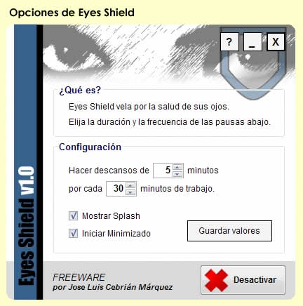
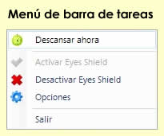
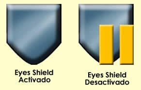

|
 Eyes Shield - Un escudo para sus ojos
Eyes Shield - Un escudo para sus ojos
|
¿Le preocupa? Siga leyendo, Eyes Shield le interesa.
Eyes Shield es el programa GRATUÍTO creado por Jose Luis Cebrián Márquez diseñado específicamente para evitar los efectos derivados de trabajar con el ordenador durante largos períodos.
Eyes Shield le programa descansos con duración y frecuencia que usted decida. Descanse cuando Eyes Shield se lo indique y reducirá notablemente los efectos nocivos de la fatiga ocular.
1. Baje e instale el Entorno .NET v2.0 de Microsoft requerido. NOTA: Si está seguro de tenerlo instalado, no será necesario instalarlo de nuevo. |
 |
| 2. Baje e instale Eyes Shield v1.0. | |
| 3. Arranque Eyes Shield, configúrelo a su gusto y pinche sobre "Guardar Valores". ¡Ya está!. |
El programa le avisará un minuto antes del momento de descanso para que termine de realizar tenga pendientes. Pasado el minuto, Eyes Shield muestra una pantalla que cubre la totalidad del escritorio y que le invita a descansar. Una vez que el descanso termine, escuchará un sonido identificativo.
Eyes Shield NO LE OBLIGA a descansar, usted puede decidir seguir trabajando cancelando el descanso en cualquier momento.
|
 |
Además, en la ventana de opciones podrá configurar si desea:
Podrá consultar la ayuda en línea y obtener la versión más actualizada pulsado el botón "?" de la ventana de opciones de Eyes Shield.
|
 |
Eyes Shield puede ser desactivado desde la ventana de opciones o desde el menú de la barra de tareas (botón derecho en el icono de Eyes Shield).
No, Eyes Shield fue concebido como proyecto de una asignatura de la carrera de informática (Programación Visual) y para satisfacer la necesidad personal de cuidar de la visión del autor. Se distribuye sin fines lucrativos, bajo licencia FREEWARE y sin ningún tipo de garantía (ver apartado siguiente).
Eyes Shield es FREEWARE, es decir, gratuíto. Se distribuye SIN NINGUNA GARANTÍA. Usted está autorizado a distribuirlo libremente. El autor no asume ningúna responsabilidad de cualquier tipo, ni en relación a la pérdida o daño de la información derivada del uso del producto. Copyright (C) 2006 Jose Luis Cebrián Márquez (http://jlcm.host.sk).
Espero sinceramente que Eyes Shield les sea de utilidad y que le ayude a cuidar de su salud. Agredeceré que contacten conmigo para cualquier cuestión, opinión o sugerencia. Desde mi página web pueden revisar otros trabajos y proyectos realizados. Gracias.